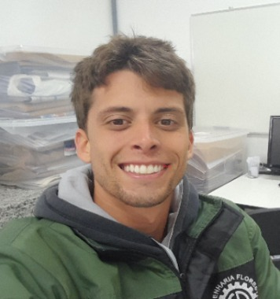

Renan Ewbank
Meu nome é Renan, tenho 26 anos de idade e sou natural de Santos. Gosto muito de morar aqui, especialmente por ter muitas praias por perto.
Gosto de praticar atividades ao ar livre. Sempre tive facilidade com esportes e aprender as diversas regras e técnicas que compõem cada estilo esportivo.
Meu hobby favortido é surfar, levo esse esporte como um estilo de vida e que inclusive tem grande influência na escolha deste curso. Também gosto de fotografia, música, meditação, espiritualidade e assuntos agronômicos. Meu programa de TV favorito é o Globo Rural.
Durante minha vida após os 18 anos, eu mais trabalhei do que estudei. Ainda assim, entrei em diversos cursos em diferentes áreas do conhecimento, mas não conclui nenhum. O curso de Engenharia Florestal foi o que eu mais gostei de todos que tentei, mas o curso ficava muito longe da minha casa e me afastou de pessoas e coisas de muita importância na minha vida, e por isso decidi fazer mudanças.
De acordo com a forma como eu vejo os caminhos que o mundo e a sociedade moderna seguem, optei por cursar Sistemas para Internet na FATEC-BS, como uma forma de aprender assuntos que possuo pouco domínio e de me adaptar à realidade que se transforma a cada dia. É um desafio para mim pois não me identifico tanto com a área, mas sei que tenho capacidade de aprender os conteúdos e que em algum momento irei me identificar em algumas área específica.